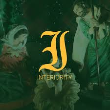
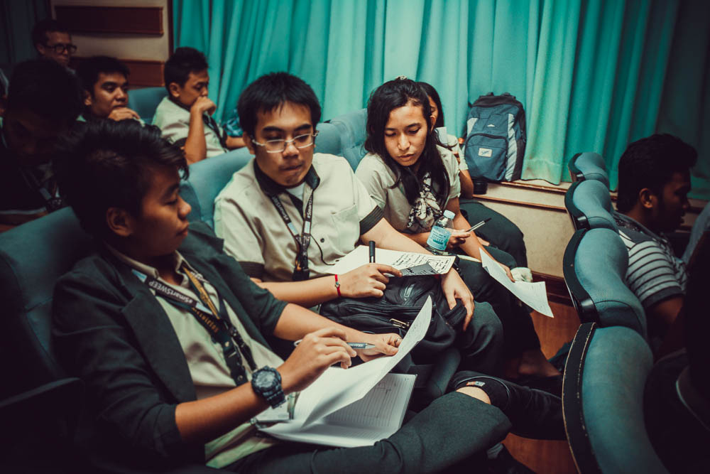
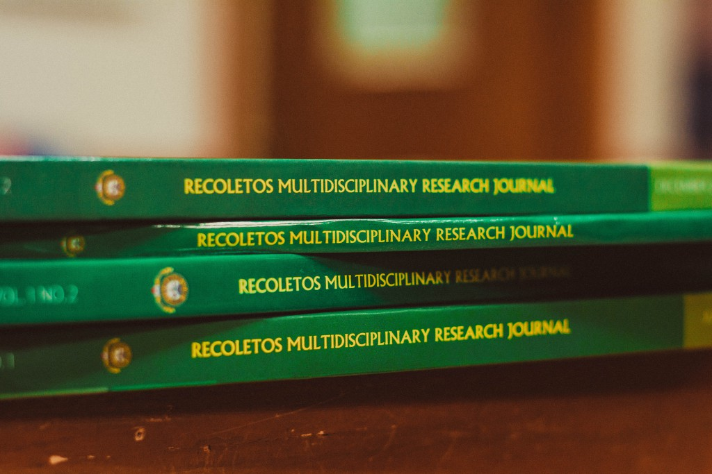

University life feels a little different here. At USJ-R, students have cultural, professional,
and spiritual opportunities that transform individuals holistically.
______
VISION
We envision the University of San Jose-Recoletos to be a premier Gospel and
Community-oriented educational institution committed to lead in instruction, research,
community engagement, and innovation in order to transform Josenians into proactive and
compassionate leaders, creators of communion, and dynamic partners of society in the 21st
Century.
MISSION
We are a Catholic University imbued with the spirit of “Caritas et Scientia”, committed to
providing the highest level of Quality Christian Community-oriented Education and instilling
a culture of continuous learning, life-sharing, multi-disciplinary orientation, pioneerism,
discovery, and innovation.
QUALITY STATEMENT
USJ-R stands for quality Christian community-oriented education. In pursuit of this commitment, we
continually enliven the curriculum with Gospel values, hybridize programs for value innovation,
engage in interdisciplinary approach to integral formation, exemplify the Augustinian Recollect
charism and core values, and leverage resources for optimal results.
CORE VALUES: I.N.S.P.I.R.E.
The ethusiasm to live out one's life as an authentic witness of God ,
being maka Diyos,makatao,makapamilya.

__________
Administrators
__________
Move Forward with USJ-R!
GRADUATE ATTRIBUTES

RELIGIOUS ATTRIBUTES

Socially Responsible Communitarian
Shows genuine concern for others especially the marginalized,
works and relates positively with others and shares willingly
one’s time, talent, and resources for the betterment of society
God-centered Individual
Lives a life in accordance with the moral norms, exhibits ethical
values worthy of emulation in workplace and observes proper
decorum in all places
Highly Competent Professional
Performs assigned tasks efficiently and actualizes plans
effectively, demonstrates resiliency and ability to solve problems
and generates new ideas and undertakes innovations.
Effective Communicator
Demonstrates effective oral communication skills, communicates
clear ideas in writing and establishes rapport/connection easily
with others.
Adaptive Lifelong Learner
Pursues knowledge consistently, seeks personal and professional
growth continually and expresses openness to continuous
change and improvement.
Orthodoxy in Catholic Faith
Demonstrate correct understanding, assimilation and
proclamation of the fundamentals of the Catholic Faith (i.e.
triune God, Church, Magisterium, sacraments, etc.)
Integrity in Moral Life
Demonstrate a life in obedience to the will of God as taught and
lived by Jesus Christ and interpreted by the Magisterium
Dynamism in Prayer Life
Participate fully consciously and actively in all forms of worship
to God “in Christ, through Christ and with Christ” as a way of life
towards service to others
Contemplative Character
Demonstrate personal relationship with Christ through search
for truth in prayers and introspection towards “life under the
shelter of God, life with God, life received from God, the very life
of God himself” (Sermon 297; OAR Constitutions 8)
Apostolic Character
Share the joy of the Gospel “for all people to love God with
us” especially “to the weakest members” and show care for
the environment
Marian
Emulate Mary, Our Lady of Consolation, as model of faith,
humility and obedience and “as a sign of sure hope and of
comfort for the people of God on their journey.”
FOUNDED 1947
Founded in 1947 by the Order of Augustinian Recollects, then
Colegio de San Jose-Recoletos developed from a small institution of
learning into one of the excellent schools in the country. From
classes held in a portion of a convent, the University built modern
structures yet retaining its classic features.